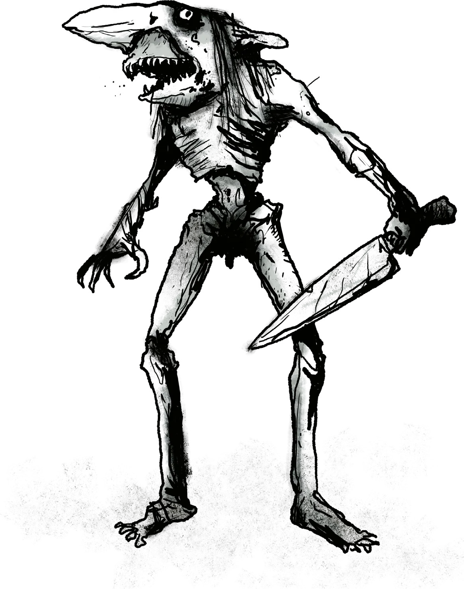

Kopf7sGefangen150sTot20s
SethS. 58
Goblin
TP 6 · Moral 7
Sehnige Haut −W2
Messer/Kurzbogen W4
Besonderes Schnell, Angriffe und Verteidigung sind SG14.
Sehnige Haut −W2
Messer/Kurzbogen W4
Besonderes Schnell, Angriffe und Verteidigung sind SG14.
Alle Goblins tragen einen Fluch. Einst wie du, sind sie nun im Gefängnis ihres wahnsinnigen Goblinfleisches gefangen. Nur ihre Augen verraten die Wahrheit: ein zerrütteter Geist, der zusieht, wie sein Körpergefängnis schreckliche Taten begeht. Schon von Goblins angegriffen zu werden, überträgt den Fluch, getragen von den Winden ihres Hasses. Treffer oder nicht, es spielt keine Rolle. Im Dunkel von Sarkash schießen sie mit sirrenden Bögen auf Vorüberziehende. Du musst den Goblin finden und töten, bevor dein Geist gelähmt ist. Lebt die fluchtragende Kreatur W6 Tage nach dem Angriff noch, verwandelst du dich unwiderruflich in einen von ihnen. Dann wird dich nur noch das Dunkel von Sarkash verbergen.